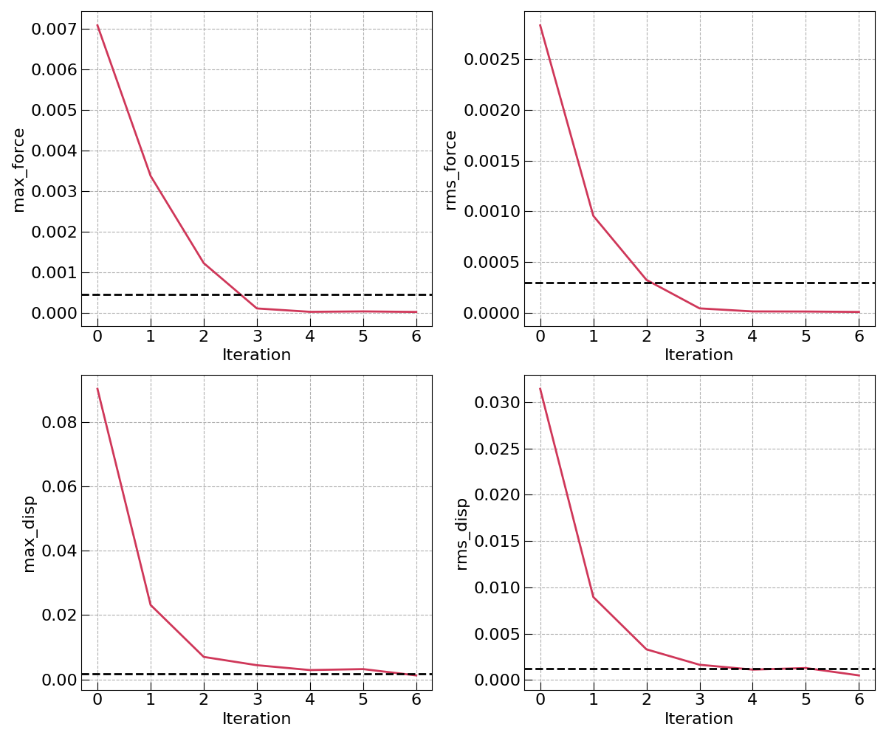

Workflow Tutorials¶
This page is under construction.
Using the Psi4 backend¶
As of version 0.0.5, the bde, binding_energy, and esp workflows
are also available with a Psi4 backend
(mispr.psi4.workflows.base), as a free/open-source alternative to
Gaussian. The workflow functions have the same names and (mostly) the same
arguments as their Gaussian counterparts – only the import path changes:
1 2 3 4 5 6 7 8 9 10 11 12 13 14 15 16 17 18 19 20 21 22 23 24 25 26 27 28 29 30 31 32 33 34 35 36 37 38 | |
Note
rapidfire runs every ready Firework and then polls forever for new
ones – it does not exit on its own once the workflow finishes. Check
lpad get_wflows for the workflow’s state and interrupt/stop the
process once it shows COMPLETED (or a FIZZLED step that can’t
make further progress).
Using the ORCA backend¶
As of version 0.0.5, the bde, binding_energy, and esp workflows are
also available with an ORCA backend
(mispr.orca.workflows.base). The workflow functions have the same names and
arguments as their Gaussian/Psi4 counterparts – only the import path changes.
This section is a complete, self-contained guide: environment setup, ORCA
installation, running each workflow, and how to read the results out of the
database.
Step 1: Set up the environment¶
The ORCA backend needs the same base environment as the rest of MISPR (see Prerequisites for full details). In short, on a cluster this means a conda environment with MISPR and its Python dependencies installed:
conda create -n mispr python=3.10
conda activate mispr
pip install -e /path/to/your/mispr/clone # editable install of this repo
plus the four FireWorks/MISPR configuration files (FW_config.yaml,
db.json, my_launchpad.yaml, my_fworker.yaml) in a config directory.
These are the files that tell MISPR where your MongoDB database lives; they are
engine-independent – if you already ran Gaussian or Psi4 workflows with MISPR,
the exact same config directory works for ORCA unchanged.
Important
FW_CONFIG_FILE must be set before any fireworks/mispr import
is executed – fireworks reads this environment variable once, at import
time. Setting it after the imports is the single most common cause of
FileNotFoundError: Please provide the database configurations. In a
Jupyter notebook, also remember that editing/pulling new MISPR code requires
a kernel restart to take effect (Python caches imported modules).
Step 2: Install ORCA¶
The ORCA backend was developed and validated against ORCA 6.1.1; any ORCA
6.x release is expected to work (the output parser keys on stable markers of
the ORCA 6 output format such as FINAL SINGLE POINT ENERGY and the
VIBRATIONAL FREQUENCIES section).
Register (free for academic use) on the ORCA forum and download the Linux archive matching your cluster, e.g.
orca_6_1_1_linux_x86-64_shared_openmpi418.tar.xz(the “shared, OpenMPI 4.1.8” variant).Transfer it to the cluster (e.g.
scpfrom your local machine) and extract it:tar -xf orca_6_1_1_linux_x86-64_shared_openmpi418.tar.xzWarning
The extracted installation is ~17 GB. On HPC clusters with small home quotas (often ~20 GB), extract into a scratch/project filesystem, not
$HOME– a half-written extraction on a full quota leaves a broken installation that must be deleted and redone.Verify it runs:
/path/to/orca_6_1_1_linux_x86-64_shared_openmpi418/orca --versionTell MISPR where it is. Three options, in priority order:
the
orca_cmdargument accepted by every ORCA workflow function,the
ORCA_CMDenvironment variable (recommended: set it once per session, next toFW_CONFIG_FILE),a bare
orcafound onPATH.
Note
Running ORCA in parallel (
num_cores> 1) requires the full absolute path to the binary (an ORCA/OpenMPI requirement) and the matching OpenMPI version loadable in your environment. Serial runs have no such requirement.
Step 3: Run a workflow¶
The ESP workflow runs four steps:
A complete, runnable script (water molecule, B3LYP/6-31G(d)):
1 2 3 4 5 6 7 8 9 10 11 12 13 14 15 16 17 18 19 20 21 22 23 24 25 26 27 28 29 30 31 32 33 34 35 36 37 38 39 | |
Note
rapidfire runs every ready Firework and then polls forever for new ones
– it does not exit on its own once the workflow finishes. Check
lpad get_wflows for the workflow’s state and interrupt/stop the process
once it shows COMPLETED (or a FIZZLED step that can’t make further
progress; lpad get_fws -i <id> -d more shows the failing step’s
traceback).
The BDE and binding energy workflows are imported and driven the same way; only the function arguments differ:
1 2 3 4 5 6 7 8 9 10 11 12 13 14 15 16 17 18 19 20 21 22 | |
Every ORCA workflow function additionally accepts orca_cmd (executable
path, overriding ORCA_CMD), num_cores (parallel processes per
calculation, default 1), and memory (MB per core, default 4000).
Note
Method and basis set choices are plain runtime arguments – changing the
level of theory means changing the two strings in
opt_gaussian_inputs/freq_gaussian_inputs, never the code. Basis set
names are passed to ORCA verbatim, so they must be spellings ORCA
recognizes (e.g. 6-31G(d), def2-SVP). When benchmarking against
Gaussian, note that ORCA’s B3LYP keyword uses the VWN5 local
correlation variant while Gaussian’s uses VWN3; use ORCA’s B3LYP/G
keyword for a strictly Gaussian-compatible B3LYP.
Step 4: Find and read the results¶
Results end up in two kinds of MongoDB collections (same layout as the Gaussian and Psi4 backends, so cross-engine results are directly comparable):
the runs collection gets one document per individual calculation (each optimization, each frequency job, each ESP single point) – the raw record, including the parsed output and the input parameters used;
one property collection per workflow (
esp,bde,binding_energy) gets a single summary document per workflow run – this is normally what you query. Filter by yourtagto find a specific run.
Fields shared by all property documents:
molecule: the final (optimized) structure, as a serialized pymatgen Molecule – species, coordinates, charge, spin multiplicity.smiles/inchi/formula_alphabetical/chemsys: standard chemical identifiers generated from the structure (via OpenBabel), so the database can be searched by molecule later without matching coordinates.functional/basis: level of theory of the underlying calculations.phase:gasorsolution(implicit solvent).tag: the label you passed in – your primary lookup key.state:successfulif the workflow completed.wall_time (s): summed runtime of all steps in the workflow.gauss_version: which engine produced the numbers – e.g.orca-6.1.1(the field name is historical; Gaussian runs store the Gaussian version and Psi4 runs storepsi4-<version>in the same place).last_updated: UTC timestamp of the database insert.
Workflow-specific fields:
esp documents:
energy: final electronic energy of the ESP single point, in Hartree.esp: the fitted CHELPG partial charges as a plain list, one entry per atom, in the same order as the atoms inmolecule.esp_by_atom: the same charges keyed by element + atom index (e.g.O0,H1,H2), readable without cross-referencingmolecule. For a neutral molecule the charges must sum to ~0; chemically sensible signs (e.g. negative on oxygen) are a quick sanity check.dipole_moment: dipole vector [x, y, z] in atomic units, taken from the frequency step.
bde documents:
fragments: the unique fragments produced by breaking each bond.bde_eV: nested mapping bond -> charge split -> energy: the first level is the broken bond as an atom-index pair (e.g.[0, 1]), the second level labels each fragment pair with its formula and charge (e.g.O1(q=0)+H1(q=0)), and the value is the dissociation energy in eV. Theq=0+q=0entry is the homolytic BDE (the number usually meant by “bond dissociation energy”); entries with opposite charges are the heterolytic channels, which are legitimately much larger in gas phase and need not be symmetric to each other (e.g. losing H+ is cheaper than losing H- for water). Chemically equivalent bonds (the two O-H bonds of water) should give identical values – a built-in consistency check.
binding_energy documents:
be_eV: E(complex) - E(mol_1) - E(mol_2), in eV. Negative means binding is favorable; hydrogen-bond complexes typically land between roughly -0.1 and -0.4 eV.
Working files (the actual ORCA .inp/.out text files of every step) are
kept under working_dir, organized per molecule and step (Optimization,
Frequency, ESP, fragments/<formula>/charge_<q>, …), so any
number in the database can be traced back to the raw ORCA output that
produced it.
Example: an annotated esp document¶
What one real document looks like in the esp collection (water,
HF/6-31G* ESP step, ORCA 6.1.1), with every field annotated – including what
the collapsed Object/Array entries contain once expanded:
{
"_id": ObjectId("..."), // assigned by MongoDB, not by MISPR
"molecule": { // the optimized structure (serialized pymatgen Molecule)
"@module": "pymatgen.core.structure",
"@class": "Molecule", // these two let pymatgen re-load the object:
// Molecule.from_dict(doc["molecule"])
"charge": 0, // total molecular charge
"spin_multiplicity": 1, // 2S+1; 1 = closed shell (all electrons paired)
"sites": [ // one entry per atom, in order (index 0, 1, 2, ...)
{"name": "O",
"species": [{"element": "O", "occu": 1}],
"xyz": [0.0, 0.0, 0.0873], // optimized cartesian coordinates, in Angstrom
"properties": {}},
{"name": "H",
"species": [{"element": "H", "occu": 1}],
"xyz": [0.0, 0.7509, -0.4787],
"properties": {}},
{"name": "H",
"species": [{"element": "H", "occu": 1}],
"xyz": [0.0, -0.7509, -0.4787],
"properties": {}}
]
},
"smiles": "O", // SMILES string; "O" is water (H atoms implicit)
"inchi": "InChI=1S/H2O/h1H2", // InChI identifier -- unambiguous, searchable
"formula_alphabetical": "H2 O1", // formula with elements alphabetized
"chemsys": "H-O", // the chemical system (elements only, no counts)
"energy": -76.005438414963, // final electronic energy of the ESP single
// point, in Hartree
"esp": [ // CHELPG charges, one per atom, same order
-0.777227, // as molecule.sites -- so this is the O
0.388383, // first H
0.388844 // second H; sum = 0.000000 (neutral molecule)
],
"esp_by_atom": { // identical numbers, keyed element+index,
"O0": -0.777227, // readable without cross-referencing
"H1": 0.388383, // molecule.sites
"H2": 0.388844
},
"functional": "hf", // level of theory of the ESP step
"basis": "6-31G*",
"phase": "gas", // no implicit solvent was used
"tag": "orca_esp_first_test", // the tag passed to get_esp_charges --
// your primary lookup key
"state": "successful", // workflow completed normally
"wall_time (s)": 2.53, // summed runtime of all workflow steps
"version": "0.0.5", // MISPR version
"gauss_version": "orca-6.1.1", // which engine + version produced the numbers
// (field name is historical: Gaussian runs
// store e.g. "16revisionC.01" here, Psi4 runs
// "psi4-1.9.1")
"last_updated": ISODate("2026-07-19T15:09:09Z"), // UTC insert time
"dipole_moment": [ // dipole vector [x, y, z] in atomic units,
0.0, 0.0, -0.8677 // from the frequency step; magnitude here
] // ~0.87 a.u. ~ 2.2 Debye, typical for water
}
Example: an annotated bde document¶
The shared fields (molecule, smiles, tag, …) mean the same as
above; what is specific to BDE is the fragments/bde_eV pair (water,
B3LYP/6-31G(d), ORCA 6.1.1):
{
// ... shared fields as above ...
"energy": -76.370015904495, // electronic energy of the (whole) principle
// molecule -- lower than the HF value above
// because B3LYP includes electron correlation
"functional": "b3lyp",
"basis": "6-31G(d)",
"fragments": { // the unique fragments produced by breaking
// each fragment appears once, as a serialized Molecule (same format as
// "molecule" above) together with the charges it was computed at --
// for water: the OH fragment and the lone H atom
// ...
},
"bde_eV": { // the actual results: bond -> charge split -> eV
"[0, 1]": { // the bond between atom 0 (O) and atom 1 (H)
"H1 O1(q=-1)+H1(q=1)": 18.4039, // heterolytic: OH(-) + H(+) ("acid" channel)
"H1 O1(q=0)+H1(q=0)": 4.7322, // homolytic: OH(.) + H(.) -- THE bond
// dissociation energy in the usual sense
// (expt. ~5.1 eV; B3LYP/6-31G(d) is
// expected to land slightly below)
"H1 O1(q=1)+H1(q=-1)": 21.7011 // heterolytic: OH(+) + H(-) -- costlier,
// as both products are unstable species;
// the two heterolytic channels are
// different reactions and need NOT match
},
"[0, 2]": { // the other O-H bond: chemically equivalent,
"H1 O1(q=-1)+H1(q=1)": 18.4039, // so its three values must reproduce
"H1 O1(q=0)+H1(q=0)": 4.7322, // [0, 1] essentially exactly -- a
"H1 O1(q=1)+H1(q=-1)": 21.7011 // built-in consistency check
}
// no [1, 2] entry: there is no H-H bond in water to break
},
"wall_time (s)": 40.62, // BDE runs many calculations (principle molecule
// opt+freq, then opt+freq per fragment per
// charge state), hence the longer runtime
"gauss_version": "orca-6.1.1"
}
Note
The key format inside bde_eV reads as <fragment formula>(q=<charge>) +
<fragment formula>(q=<charge>): e.g. O1(q=0)+H1(q=0) means “an OH
fragment with charge 0, plus an H fragment with charge 0” – i.e. the two
radicals of a homolytic split. The energies include the thermochemistry
corrections from the frequency steps, not just raw electronic energies.
For binding_energy documents the specific field is a single scalar,
be_eV (e.g. -0.19): E(complex) - E(mol_1) - E(mol_2) in eV, negative
when binding is favorable.
Running an ESP workflow¶
The ESP workflow calculates the partial charges on atoms of a molecule. The charges are fit to the electrostatic potential at points selected according to the Merz-Singh-Kollman scheme, but other schemes supported by Gaussian can be used as well.
The ESP workflow performs the following steps:
Note
The geometry optimization and frequency calculation steps (marked with a dashed border in the above diagram) are optional. If the input structure is already optimized, the workflow will skip these steps.
In the following example, we will run the ESP workflow on a monoglyme molecule.
1 2 3 4 5 6 7 8 9 10 11 12 13 14 15 16 | |
mol_operation_typerefers to the operation to be performed on the input to process the molecule.In this example, we are requesting to directly retrieve the molecule from PubChem by providing a common name for the molecule to be used as query criteria for searching the PubChem database via the
molinput argument. For a list of supportedmol_operation_typeand the correspondingmol, refer tomispr.gaussian.utilities.mol.process_mol().Adds the workflow to the launchpad.
Download esp_tutorial.py.
Run the script using the following command:
python esp_tutorial.py
And then launch the job through the queueing system using the following command:
qlaunch rapidfire # (1)!
This command can submit a large number of jobs at once or maintain a certain number of jobs in the queue.
The workflow will run and create a directory named C4H10O2 in the current working
directory. The directory will contain the following subdirectories:
C4H10O2
├── Optimization
├── Frequency
├── ESP
├── analysis
Inside the Optimization, Frequency, and ESP subdirectories, you
will find the Gaussian input and output files for the corresponding step. Inside the
Optimization subdirectory, you will also find a “convergence.png” figure that
shows the forces and displacement convergence during the course of the optimization.

The analysis subdirectory contains the results of the workflow in the form of a
esp.json file. You can read the content of the esp.json file using the
following commands:
1 2 3 4 5 6 | |
This will output the partial charges on the atoms of the molecule:
{
"1": ["O", -0.374646],
"2": ["O", -0.373831],
"3": ["C", 0.132166],
"4": ["C", 0.132716],
"5": ["C", 0.034284],
"6": ["C", 0.031733],
"7": ["H", 0.033853],
"8": ["H", 0.034024],
"9": ["H", 0.034218],
"10": ["H", 0.034388],
"11": ["H", 0.070724],
"12": ["H", 0.03474],
"13": ["H", 0.03438],
"14": ["H", 0.034621],
"15": ["H", 0.071656],
"16": ["H", 0.034974],
}